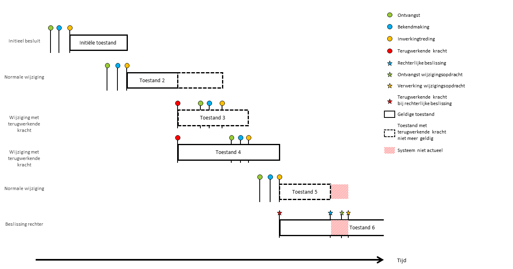
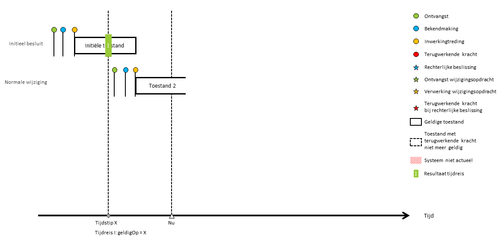
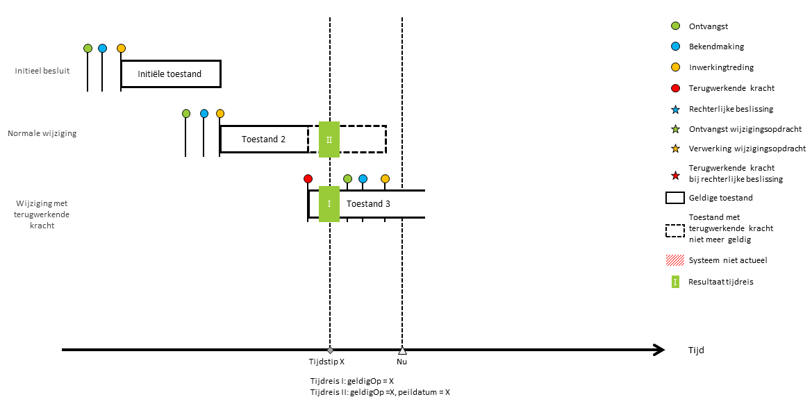
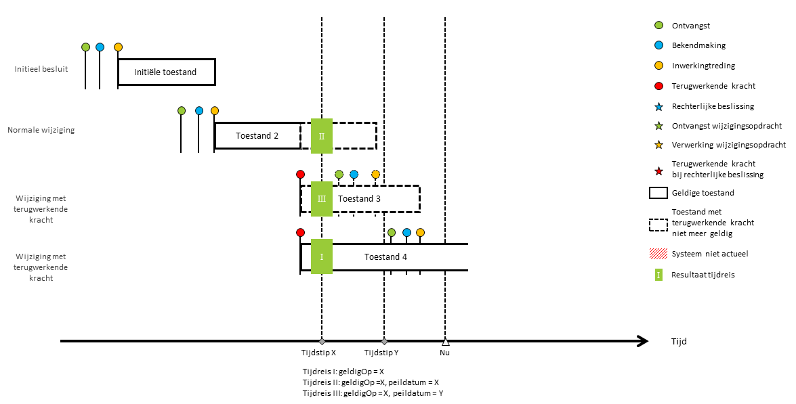
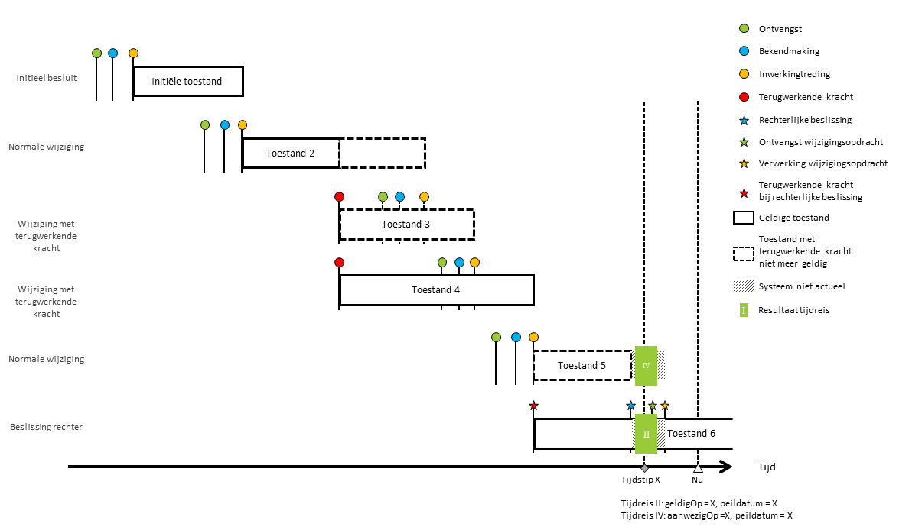
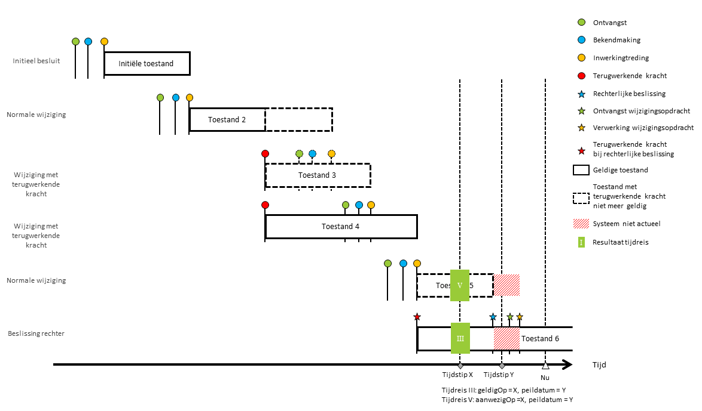

Toelichting tijdreizen
Introductie
Een van de eisen die vanuit de Omgevingswet gesteld wordt aan de voorzieningen is dat tijdreizen mogelijk is. Het is namelijk niet alleen belangrijk om te weten wat de actuele situatie is, maar ook wat de situatie in het verleden was. Dit is belangrijk, omdat de bestuursrechter over het algemeen ex tunc (vanuit het toenmalige, dus de feitelijke en juridische situatie zoals deze destijds was) toetst.
Dit intuïtieve begrip van tijdreizen is echter onvoldoende om dit begrip goed in te vullen. Er zijn scenario’s waarin de situatie in het verleden wijzigt als gevolg van een nieuw besluit, bijvoorbeeld als de inhoud van dat besluit met terugwerkende kracht rechtskracht krijgt.
Deze toelichting beschrijft welke vormen van tijdreizen bij het ontwerp van STOP zijn meegenomen en waarvoor ondersteuning aanwezig is. De toelichting is geschreven vanuit het perspectief van de LVBB, die deze tijdreizen zal ondersteunen, maar ook andere systemen kunnen dezelfde tijdreizen ondersteunen. Het gaat hierbij uitsluitend om terugkijken. Tijdreizen naar de toekomst is geen onderdeel van deze notitie, zie Tijdreizen naar de toekomst hieronder voor een toelichting.
Deze toelichting benadert het tijdreizen vanuit de functionele vraag aan een systeem. Hoe het systeem het tijdreizen realiseert wordt buiten beschouwing gelaten.
Tijdreizen voor omgevingsdocumenten
De LVBB bevat de bekendmakingen van (wijzigings-)besluiten. Daarnaast biedt het geconsolideerde informatie: de in werking getreden wijzigingen worden toegepast op de bestaande versie van een omgevingsdocument, zodat een nieuwe toestand van het omgevingsdocument ontstaat. Dit “stapelen” van wijzigingen wordt consolideren genoemd. Op elk moment kan een gebruiker de actuele, op dat moment juridisch geldige toestand van een omgevingsdocumenten opvragen, zonder zich te hoeven bekommeren om hoe de verschillende wijzigingsbesluiten correct te consolideren.
Tijdreizen in de LVBB wordt gebruikt om een reconstructie te maken van een toestand zoals die er op een bepaald moment in het verleden uitzag. Tijdreizen gaat niet over de wijzigingsbesluiten zelf. De wijzigingsbesluiten bestaan gewoon na het officieel bekendmaken ervan en zullen ook nooit meer veranderen. Tijdreizen is alleen betekenisvol binnen een context waarbij bepaalde informatie ook kan ophouden met geldig zijn (Tijdreizen als concept is hiermee ook bruikbaar voor zaken als begrippen uit de catalogus of bepaalde informatieproducten van informatiehuizen.). Bij omgevingsdocumenten is tijdreizen alleen relevant bij de geconsolideerde toestanden.
In de volgende figuur wordt met de speldenprikken aangegeven wat de levenscyclus van het wijzigingsbesluit is en met de blokken aangegeven wat de effecten zijn op de geconsolideerde toestand van het omgevingsdocument.

De belangrijkste gebeurtenissen worden in deze tabel uitgelegd:
| Gebeurtenis | Betekenis |
|---|---|
| Ontvangst | De datum waarop een door het bevoegd gezag genomen besluit is ontvangen door de LVBB |
| Bekendmaking | De datum waarop een besluit officieel bekendgemaakt is. Besluiten treden niet eerder in werking dan zij bekendgemaakt zijn. Bekendmaken geschiedt door plaatsing op de website “www.officielebekendmakingen.nl” |
| Inwerkingtreding | De datum waarop een besluit (of delen daarvan) juridische werking krijgen. Dit kan niet eerder dan dat het besluit bekendgemaakt is. Inwerkingtreding kan op verschillende manieren worden geregeld. Het kan geregeld worden in het besluit zelf (“deze regeling treedt in werking met ingang van de dag na de datum van uitgifte van de Staatscourant waarin zij wordt geplaatst”, “deze regeling treedt in werking op 1 januari 2020”) of via een ander besluit (“treedt in werking op een bij koninklijk besluit te bepalen tijdstip”). In het laatste geval is een inwerkingtredingsbesluit nodig om het bekendgemaakt besluit inwerking te laten treden. Dit wordt ook uitgestelde inwerkingtreding genoemd. Als verschillende delen van een besluit op verschillende momenten in werking treden, dan wordt dit gefaseerde inwerkingtreding genoemd. |
| Terugwerkende kracht | De datum tot wanneer een besluit terugwerkt naar het verleden na inwerkingtreding. Hiermee worden besluiten na inwerkingtreding geldig vanaf een moment in het verleden. Deze datum ligt per definitie vóór de datum inwerkingtreding. Een besluit treedt niet in werking in het verleden, maar treedt in werking na bekendmaking en werkt terug naar het verleden. Dit is terug te zien in formuleringen als “Deze regeling treedt in werking met ingang van de dag na de datum van publicatie van de Staatscourant waarin zij wordt geplaatst en werkt terug tot en met 1 augustus 2016.” |
| Rechterlijke beslissing | Een uitspraak van de rechter. In deze figuur worden uitspraken bedoeld die directe juridische werking hebben. Uitspraken met indirecte werking leiden tot een nieuw besluit door Bevoegd gezag. Dit besluit zal regulier verwerkt worden (eventueel met terugwerkende kracht) N.B. Dit zijn slechts twee van de mogelijke scenario’s waarop uitspraken van de rechter verwerkt worden. |
| Verwerking wijzigingsopdracht | Het moment waarop de LVBB een wijzigingsopdracht geheel heeft verwerkt en de resultaten hiervan beschikbaar zijn gemaakt. Een wijzigingsopdracht is een administratieve handeling waar geen bekendmaking voor nodig is. Een voorbeeld is een rechterlijke beslissing die een directe juridische werking heeft. |
| Geldigheidsperiode | Als een wijzigingsbesluit in werking treedt, dan leidt dit tot een nieuwe toestand. De geldigheid van een toestand start bij de inwerkingtreding van het besluit dat leidt tot deze toestand. De startdatum van de geldigheid is daarmee gelijk aan de datum inwerkingtreding van het wijzigingsbesluit dat tot deze toestand heeft geleid, behalve bij terugwerkende kracht situaties. In die gevallen is de start van de geldigheid gelijk aan de datum van de terugwerkende kracht. De geldigheid eindigt als een volgend besluit in werking treedt waardoor een nieuwe toestand ontstaat. |
| Beschikbaarstelling | De datum waarop een toestand voor het eerst geheel verwerkt is in het systeem en raadpleegbaar is in het systeem. Normaal gesproken is dit gelijk aan de datum inwerkingtreding van het besluit dat leidt tot deze nieuwe toestand. |
Er zijn twee hoofdsoorten van tijdreizen, namelijk door datgene wat juridisch kenbaar was, en datgene dat in het systeem beschikbaar was. Waarbij de vraag steeds een variatie is op de basisvraag: Wat was de toestand van een besluit op een bepaald tijdstip? Deze notitie onderscheidt vijf verschillende soorten tijdreisvragen.
Tijdreis I
De meest eenvoudige tijdreisvraag is:
Wat was juridisch geldig op tijdstip X (in het verleden)?

Toelichting tijdreis I: Een besluit met een nieuwe regeling (initieel besluit) wordt bekendgemaakt. Na inwerkingtreding is er een Initiële toestand. Hierna volgt een wijzigingsbesluit (normale wijziging) die na inwerkingtreding resulteert in een nieuwe toestand (Toestand 2).
Een gebruiker wil soms weten wat geldig is op tijdstip X, bijvoorbeeld omdat er een discussie is over de (juridische) juistheid van handelen op tijdstip X. Omdat er sindsdien een wijzigingsbesluit in werking is getreden, ziet hij een andere toestand als hij de actuele toestand opvraagt (voorbeeld) zonder een tijdreis te maken. Hij ziet dat er na tijdstip X een wijziging is doorgevoerd. Door tijdreis I te maken (zie het groene vlak in de figuur) ziet hij wat op tijdstip X (voorbeeld) juridisch geldig was, in de context van de overige geconsolideerde informatie die op dat moment juridisch geldig was.
Tijdreis II
Een ander scenario is dat een gebruiker op tijdstip X heeft gekeken wat er geldig was en daarnaar heeft gehandeld. Nu ontstaat er een discussie of hij dat terecht heeft gedaan. De vraag is dan:
Wat was vanuit het juridisch perspectief op tijdstip X geldig op dat tijdstip?
Een voorbeeld hiervan is: op 15 april heeft een initiatiefnemer een activiteit uitgevoerd. Op 1 mei is een nieuw besluit in werking getreden met terugwerkende kracht naar 1 april. Een belanghebbende voert op 15 mei tijdreis I uit: wat was er geldig op 15 april en ziet daar de nieuwe toestand (toestand 3) omdat deze met terugwerkende kracht geldt. Hierop tekent de belanghebbende bezwaar aan. De initiatiefnemer weet echter zeker dat hij correct heeft gehandeld. Hij vraagt uit de LVBB de toestand op die geldig was op 15 april, vanuit het juridische perspectief van die datum. Dat is toestand 2.
In deze notitie wordt het begrip “kennen als juridisch geldig” bedoeld wat de gebruiker juridisch gezien had kunnen kennen. Dat betekent dat alle juridische informatie die op dat moment in werking is getreden wordt meegenomen.
Dit kan een ander beeld opleveren dan tijdreis I als er een wijzigingsbesluit in werking treedt met terugwerkende kracht.

Toelichting tijdreis II: Er volgt nu een besluit dat terugwerkende kracht heeft (Wijziging met terugwerkende kracht). Dit besluit kent een normale procesgang rond bekendmaking en inwerkingtreding, maar zal direct bij inwerkingtreden ook terugwerken naar een moment in het verleden (de rode speld). Hierdoor ontstaat een nieuwe toestand die ook al in het verleden geldig was (Toestand 3) en is in diezelfde periode Toestand 2 met terugwerkende kracht ook niet meer geldig (de gestippelde balk).
In dit voorbeeld gaat het om een wijziging die na tijdstip X in werking is getreden, maar terugwerkende kracht heeft naar een tijdstip dat vóór tijdstip X ligt. Tijdreis I geeft als antwoord de toestand waarbij de wijziging met terugwerkende kracht is doorgevoerd (voorbeeld), maar tijdreis II geeft wat een gebruiker indertijd kende, dus op tijdstip X zelf. In tijdreis II wordt dus voor de peildatum tijdstip X gekozen. Het resultaat is dan exclusief de wijziging met terugwerkende kracht (voorbeeld). Dit is geen ongewone situatie; er zijn voorbeelden waarin een besluit meerdere keren (zelfs zes keer) met terugwerkende kracht gewijzigd is.
Tijdreis III
Een gebruiker kan in het verleden (op tijdstip Y) tijdreis I hebben uitgevoerd, daarnaar gehandeld hebben, en pas veel later ontstaat discussie over dat handelen. Dit is bijvoorbeeld het geval als de gebruiker op tijdstip Y een belastingaangifte gedaan heeft, waarover hij nu met de belastingdienst correspondeert. Daarom is er nog een tijdreis:
Wat kende de gebruiker op tijdstip Y dat juridisch geldig was op tijdstip X (X < Y)?
Op 15 april heeft een initiatiefnemer een activiteit uitgevoerd. Op 1 mei is een wijziging met terugwerkende kracht naar 1 april ingegaan. Voor de zekerheid controleert de initiatiefnemer de juridische situatie nogmaals. Hij vergelijkt daarbij de toestand zoals deze nu geldig is (wat was geldig op 15 april) en zoals deze was toen de activiteit is uitgevoerd (Wat was vanuit het juridisch perspectief van 15 april geldig op 15 april). In beide gevallen is de activiteit toegestaan. Op 1 juni treedt een nieuw besluit in werking met terugwerkende kracht naar 1 april. In deze nieuwe toestand is de activiteit niet meer toegestaan. Hierdoor ontstaat een geschil. Daarom blijft het ook nu nog belangrijk dat de initiatiefnemer aan het systeem kan vragen: wat was vanuit het juridisch perspectief van 15 mei geldig op 15 april?
Dat dit ook echt een ander antwoord kan opleveren dan de eerdere tijdreizen I en II wordt geïllustreerd door het voorbeeld:

Toelichting tijdreis III: Er volgt nu een tweede besluit dat terugwerkende kracht heeft (De tweede Wijziging met terugwerkende kracht). Deze werkt tot hetzelfde moment terug als het eerste besluit met terugwerkende kracht. Hierdoor is Toestand 3 met terugwerkende kracht niet meer geldig en ontstaat met terugwerkende kracht een nieuwe toestand (Toestand 4) die over de gehele periode geldig is.
In tijdreis III kijkt de gebruiker naar tijdstip X, maar niet met alle kennis van het heden, maar vanuit het perspectief van iemand die zich op tijdstip Y bevindt. Met andere woorden, de peildatum van de juridische kennis is niet het heden, maar Tijdstip Y. Op tijdstip Y is de laatste wijziging met terugwerkende kracht (leidend tot toestand 4) nog niet in werking getreden, maar wel de eerste wijziging met terugwerkende kracht leidend tot toestand 3. Hierdoor kende de gebruiker kijkend met peildatum Y toestand 3 als juridisch geldig op tijdstip X. Dit is dus anders dan tijdreis I, waarbij de gebruiker terugkijkt met de juridische kennis van het heden, maar ook anders dan tijdreis II, waarbij de gebruiker terugkijkt met de juridische kennis van alleen tijdstip X.
Aanvullende tijdreizen
In de discussies die tot tijdreis II of tijdreis III leiden is er stilzwijgend van uitgegaan dat de vraag Wat kende de gebruiker vertaald kan worden naar Wat zag de gebruiker in het systeem. Dit is meestal correct. De LVBB stelt direct na inwerkingtreding een nieuwe toestand van het omgevingsdocument beschikbaar. Er zijn echter situaties waarin het systeem een tijd lang verkeerde informatie toont. Voorbeelden zijn:
Een rechter kan een besluit vernietigen. Als het vonnis kracht van gewijsde heeft gekregen, dan is het besluit juridisch niet meer geldig. De rechter is echter geen bronhouder; een bronhouder zal de consequenties van het vonnis moeten bepalen en die op de geëigende weg aan het systeem moet doorgeven.
Er kan een (kennelijke) fout zijn gemaakt bij het registreren van de elektronische publicatie die pas na het bekendmaken aan het licht komt. Zo’n fout kan worden rechtgezet waarbij de gecorrigeerde elektronische publicatie de foutieve versie vervangt. Het gaat hier niet om fouten in bekendgemaakte omgevingsdocumenten, maar om kennelijke fouten in het verwerken in geconsolideerde omgevingsdocumenten.
Deze twee voorbeelden verschillen op een fundamenteel punt van een wijzigingsbesluit met terugwerkende kracht: in situaties van een wijziging met terugwerkende kracht, is de oude juridische situatie op dat moment wel degelijk geldig was geweest. Bij deze voorbeelden is dit echter niet het geval: het systeem heeft dan enige tijd een toestand beschikbaar gesteld die in die periode juridisch gezien nooit geldig was geweest.
Om dit te ondervangen zijn er twee aanvullende tijdreizen, die lijken op Tijdreis II en Tijdreis III. Het verschil is dat tijdreis II en tijdreis III vragen naar wat de gebruiker juridisch kende als geldig, vragen deze twee aanvullende tijdreizen naar wat in het systeem beschikbaar was.
Tijdreis IV
De evenknie van tijdreis II (Wat kende de gebruiker als juridisch geldig op tijdstip X) wordt:
Wat zag de gebruiker als juridisch geldig op tijdstip X (in het verleden)?
Een voorbeeld om het verschil met tijdreis II te illustreren, is wanneer een uitspraak van een rechter direct leidt tot een nieuwe juridische situatie, maar waarbij deze situatie nog niet verwerkt is in de LVBB.

Toelichting tijdreis IV: Er volgt nu een nieuw wijzigingsbesluit (Tweede Normale wijziging). Na een procesgang wordt dit besluit op een aantal onderdelen teruggedraaid (Beslissing rechter). Deze beslissing van de rechter heeft onmiddellijke werking en werkt ook terug naar het moment van inwerkingtreding van het wijzigingsbesluit. De beslissing van de rechter is juridisch gezien direct kenbaar voor iedereen.
Door deze uitspraak ontstaat een nieuwe toestand (Toestand 6) en is Toestand 5 met terugwerkende kracht niet meer geldig. In de tijd die verstreken is tussen de beslissing van de rechter en de verwerking hiervan in het systeem, is het systeem niet actueel (rode gebieden).
In beide hier getoonde tijdreizen wordt gebruik gemaakt van de peildatum op tijdstip X. In tijdreis IV vraagt gebruiker in wezen wat het systeem had gegeven als geldig beeld op tijdstip X. Op tijdstip X was echter wel juridisch gezien kenbaar dat deze uitspraak al was gedaan, ook al was deze nog niet verwerkt. Tijdreis II vraagt naar wat juridisch kenbaar was. Om die reden is de uitkomst van tijdreis II (wat kende ik als juridisch geldig op tijdstip X) toestand 6.
Tijdreis V
De evenknie van tijdreis III (Wat kende de gebruiker op tijdstip Y dat juridisch geldig was op tijdstip X) wordt:
Wat zag de gebruiker op tijdstip Y (in het verleden) dat juridisch geldig was op tijdstip X (X < Y)?
Een voorbeeld om het verschil met tijdreis III te illustreren:

Toelichting tijdreis V: Dit is exact dezelfde situatie als voorgaand voorbeeld, maar met een andere tijdreisvraag.
Net als in Tijdreis IV vraagt de gebruiker in Tijdreis V in wezen wat het systeem had aangegeven als de gebruiker op tijdstip Y naar het geldige beeld op tijdstip X had gevraagd. Omdat op tijdstip Y de wijzigingsopdracht nog niet verwerkt was, is het resultaat van Tijdreis V dat op tijdstip X Toestand 5 geldig was. Ook hier geldt weer dat de uitspraak van de rechter wel al juridisch kenbaar was op tijdstip Y, waardoor Tijdreis III (Wat kende ik op tijdstip Y, dat juridisch geldig was op tijdstip X) als antwoord Toestand 6 heeft.
Tijdreizen naar de toekomst
Er is een belangrijk verschil tussen tijdreizen naar het verleden en naar de toekomst. Een tijdreis naar het verleden wordt gedaan om de juridische geldigheid van informatie te achterhalen. Een tijdreis naar de toekomst kan dat niet – de LVBB heeft geen compleet beeld van de toekomst, en de ervaring bij vergelijkbare systemen (wetten.overheid.nl) is dat het voor eindgebruikers lastig is daarmee om te gaan.
Het concept tijdreizen naar de toekomst is noodzakelijk om het effect van nog niet in werking getreden besluiten te kunnen beoordelen, bijvoorbeeld door ze – als ware ze reeds in werking getreden – te presenteren in samenhang met de omgevingsdocumenten die gewijzigd worden. De tijdreis beschrijft geen juridisch geldende regeling, maar geeft wel aan hoe de toekomst er op basis van de reeds genomen besluiten er waarschijnlijk uit gaat zien. Waarschijnlijk, omdat er altijd de mogelijkheid is dat het bevoegd gezag nog wijzigingen aanbrengt voordat het besluit in werking treedt.
Het is waarschijnlijk dat tijdreizen naar de toekomst niet (alleen) met behulp van tijdsparameters naar datums in de toekomst wordt beantwoord, maar eerder in de vorm van “wat-als vragen”. De informatiebehoefte van de raadpleger is dan beter te beschrijven als “wat is er juridisch geldig als dit wijzigingsbesluit / conceptbesluit in werking zou treden”. Dit wordt in STOP ondersteund via proefversies van besluiten.
Formele en materiële historie
In de beschrijving van historie worden vaak de termen materiële historie en formele historie gebruikt. Deze termen kunnen ook op het tijdreizen toegepast worden. Onder materiële historie wordt de situatie in de werkelijkheid verstaan, onder formele historie de situatie in de registratie. Dit historiemodel is een invulling van een bi-temporeel historiemodel (een historiemodel over twee tijdassen, namelijk wat gebeurt er met een gegeven in de werkelijkheid en wanneer is het gegeven bijgewerkt in de registratie).
Binnen het domein van de LVBB gaat het om besluiten. De werkelijkheid is dus een formeel juridische werkelijkheid. Een complicatie bij het hanteren van de termen formele historie of materiële historie is dat de juridische geldigheid ook met terugwerkende kracht kan veranderen. Dit is niet helemaal hetzelfde als materiële historie, aangezien een besluit met terugwerkende kracht in werking treedt op een moment in de toekomst na bekendmaking. Ook is er een verschil tussen de (wijzigings-)besluiten en de objecten die gewijzigd worden.
Om die reden wordt in deze toelichting bewust geen gebruik gemaakt van deze terminologie, maar wordt terminologie gehanteerd die vanuit besluiten gebruikelijk is: bekendmaking, inwerkingtreding en terugwerkende kracht. Verder wordt het begrip beschikbaarstelling gebruikt om aan te geven dat een bepaalde toestand door het systeem beschikbaar gesteld was op dat moment.
Archivering
Historie en archivering kennen veel raakvlakken. Beide onderwerpen gaan over het oproepen van een beeld uit het verleden. Maar het zijn wel verschillende onderwerpen met verschillende eisen.
Historie voorziet in een functionele behoefte van de eindgebruiker. Die wil een bepaalde situatie zoals deze geldig of zichtbaar was in het verleden weer oproepen.
Archivering is een verplichting die opgelegd is aan overheidsorganen. Informatie wordt gearchiveerd om de volgende redenen: verantwoording van het eigen handelen of vastleggen van datgene wat van cultuurhistorische waarde is.
Deze doelen vertalen zich naar andere functionele behoeften, waarbij selectie, duurzaam bewaren en vernietiging van informatie een belangrijke rol spelen.
Om te voldoen aan een archiefplicht is het niet noodzakelijk en ook niet voldoende om te stellen dat tijdreizen in de historie mogelijk is. Wel is het mogelijk dat voor een deel dezelfde technieken gebruikt kunnen worden.
Een voorbeeld van een verschil is informatie over wat een voorziening daadwerkelijk ontvangen heeft. Het kan noodzakelijk zijn om deze informatie te archiveren (wie heeft welk bericht wanneer verstuurd?) om veranderingen in de gegevensverzameling van de voorziening te verantwoorden. Deze informatie is echter voor het tijdreizen in de gegevensverzameling niet noodzakelijk om vast te houden.
Archiveren is geen onderdeel van STOP.